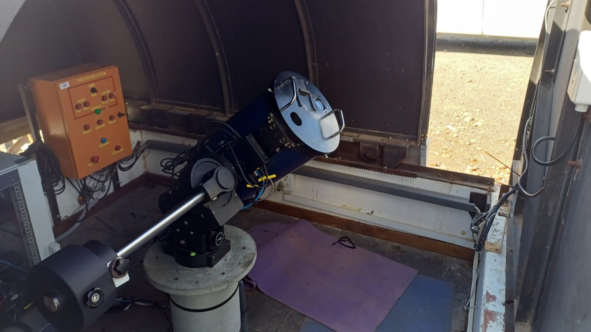
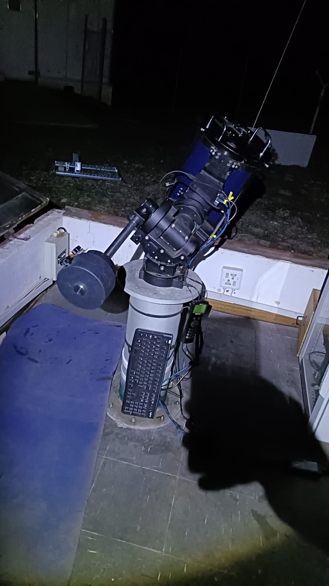
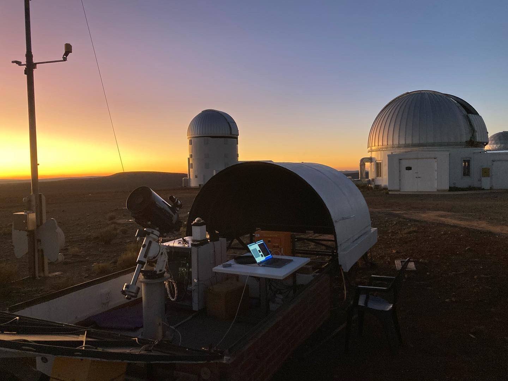
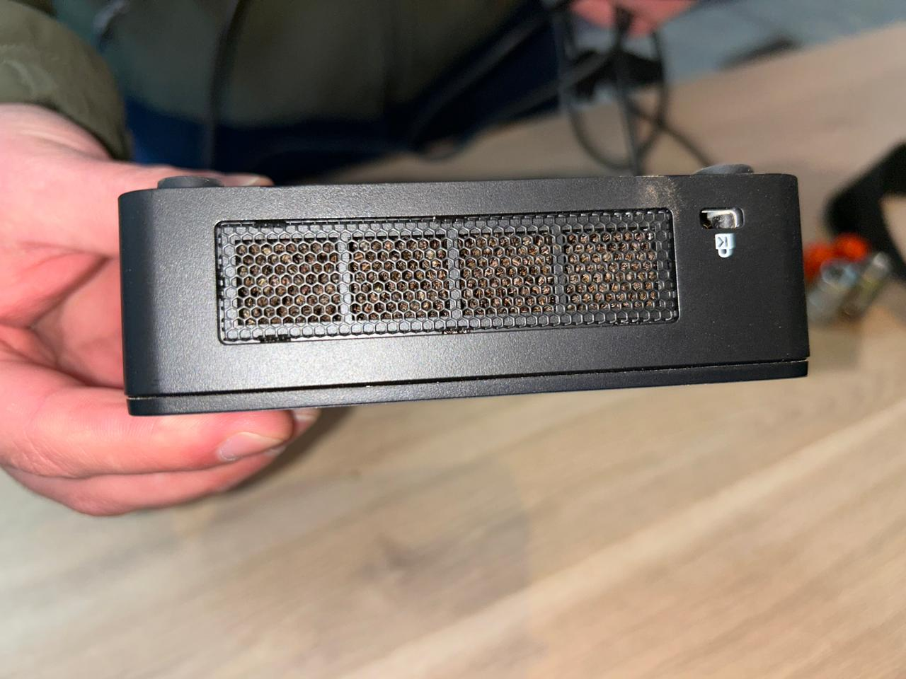
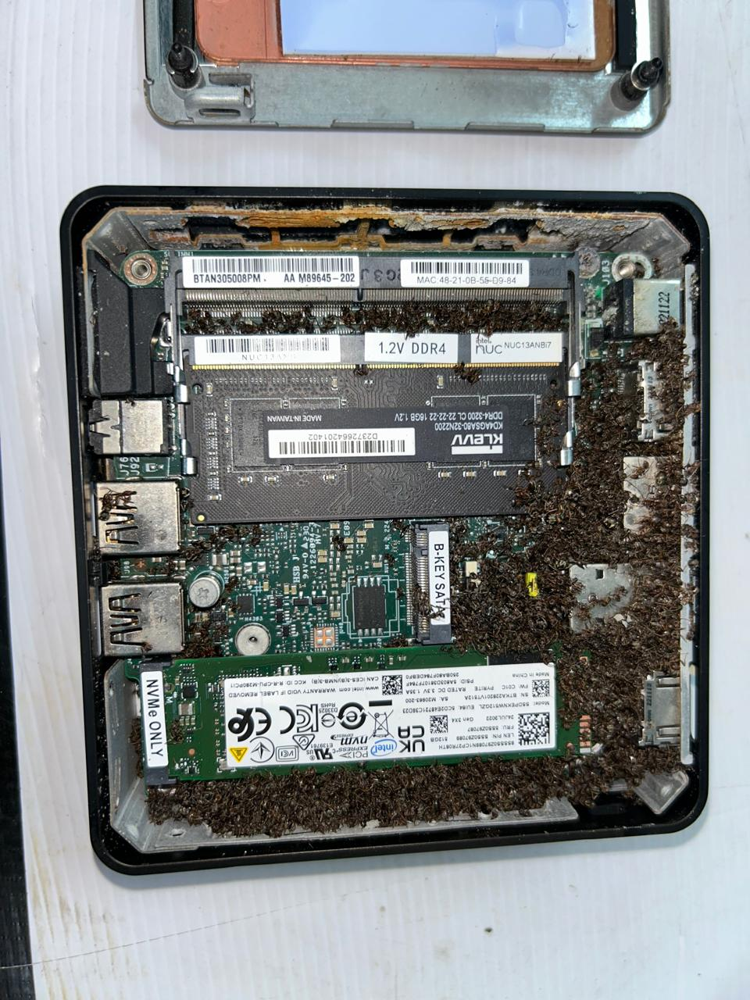
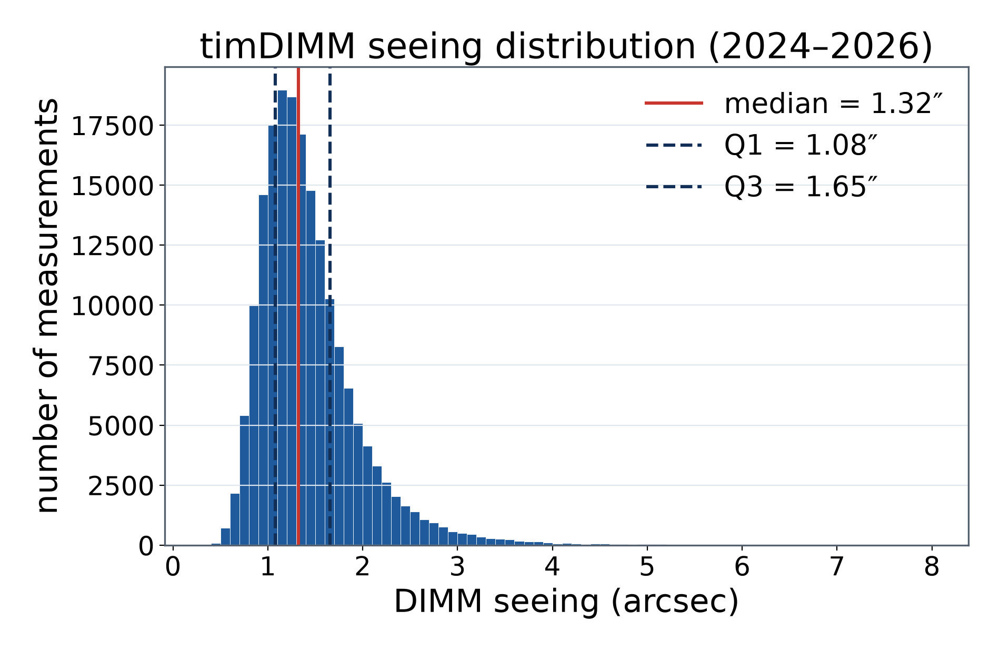
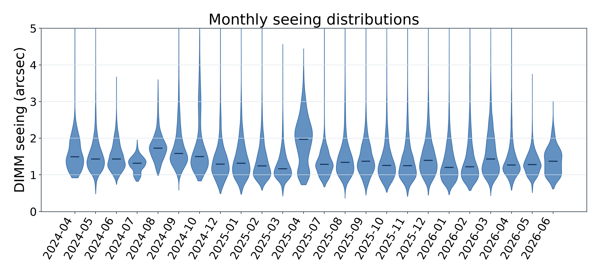
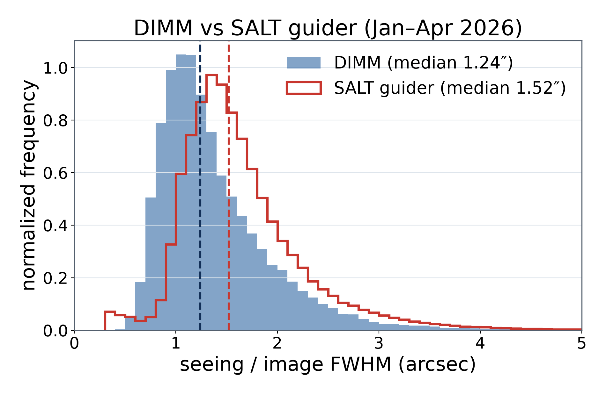
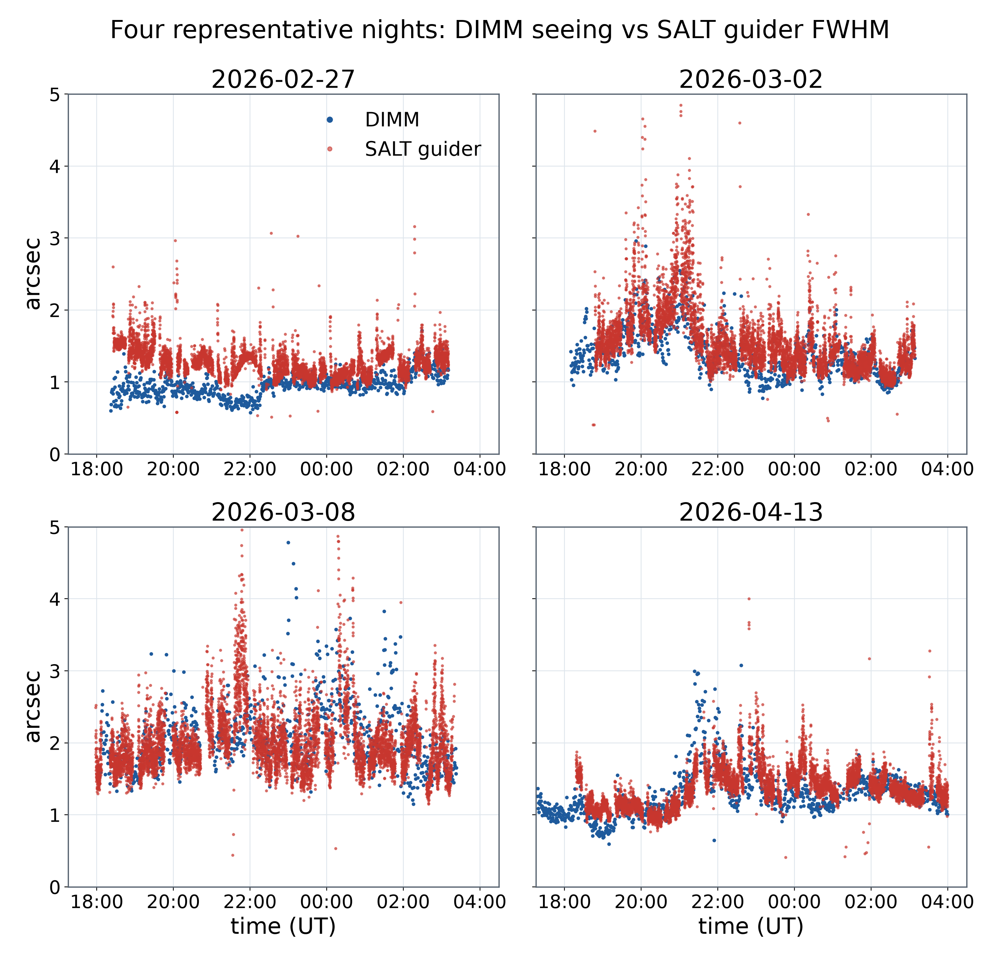

Abstract
Automated measurement of atmospheric seeing began at the South African Astronomical Observatory (SAAO) in March 2010. The original equipment consisted of a MASS-DIMM mated to a 25 cm Meade LX200 with the DIMM channel feeding a high-speed (200+ fps) IEEE1394 camera. That hardware eventually succumbed to the ravages of time. The interfaces to the MASS and DIMM camera became obsolete and difficult to support. The key failure, though, was that the mount could no longer point or track well enough to be useful anymore.
In 2024 the system was upgraded significantly and returned to routine operation. The DIMM camera and mount were replaced with newer, more performant options and the MASS-DIMM was replaced with a simple DIMM mask. We present results from the first two years of renewed operation, compared to seeing measurements from other sources at the SAAO site, and describe the updated software developed for this system.
New Hardware
The original 2010 system paired a MASS-DIMM with a 25 cm Meade LX200; the DIMM channel fed a 200+ fps IEEE1394 camera. Two failures ended its life: the MASS and DIMM camera interfaces became obsolete and unsupportable and — decisively — the mount could no longer point or track reliably.
The 2024 rebuild keeps the DIMM technique but modernizes the system:
- Mount — [TODO: new mount make/model] replacing the failed LX200.
- DIMM camera — [TODO: model, frame rate, interface] replacing the IEEE1394 camera.
- DIMM mask — the MASS-DIMM was retired for a simple two-aperture DIMM mask, simplifying the optics and upkeep.
- [TODO: OTA reused or replaced? aperture?]



New Software
The upgrade included a substantial rewrite of the acquisition and analysis software [TODO: confirm stack — Python]. Key elements:
- Acquisition — camera control and frame capture [TODO: driver/library].
- DIMM reduction — differential image motion → seeing [TODO: cadence / real-time?].
- Telescope control — pointing, tracking, target selection on the new mount [TODO: details].
- Logging & dissemination — seeing values stored and [TODO: how published to operations].
Ant Infestation
[TODO: Ant infestation story — to be written by the author.]


Results & Comparisons
Two years of renewed operation (Apr 2024 – Jun 2026) give a median DIMM seeing of ~1.3″ [verify against histogram callout].


Comparison with the SALT guider

